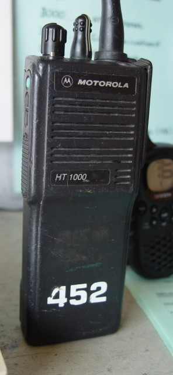
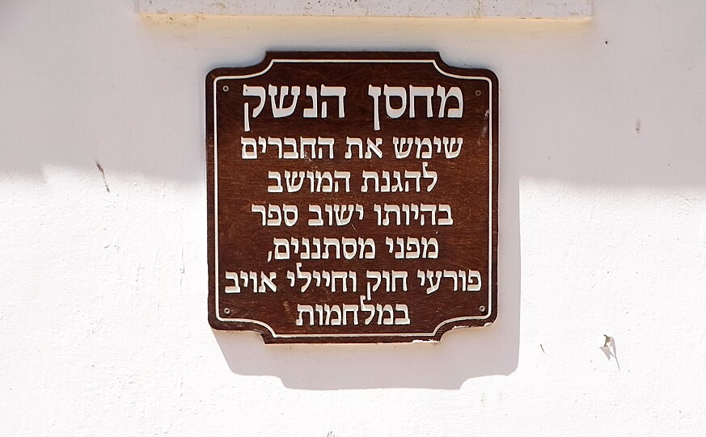

i07 · pass acceptance record (ATR)
npm run atp -- i07 · procedure: docs/method/pass-atp.html · criteria: docs/method/pass.md v2 · issueAutomatic tests · T01–T15
| # | Check | Result | Verdict |
|---|---|---|---|
| T01 | validate:strict: no errors on this item | clean | PASS |
| T02 | A pass block is present (§1.7) | dated 27.09.2026 | PASS |
| T03 | Stage before → after recorded (§1.5) | 6 → 4 (יושם) · the old record said 6; corrected by the pass | PASS |
| T04 | Responsible body named, institutions only (§1.1) | צה"ל · משרד הביטחון | PASS |
| T05 | Stage 1 rests on two independent origins, or says why not (§1.2) | 4: מבקר המדינה — דוח מאי 2026 על הרבש"צים · צה"ל — תחקיר הקרב בבארי · מבקר המדינה — דוח 2022 על מרכיבי הביטחון ביישובים (דרך מרכז המחקר והמידע של הכנסת) · צה"ל — המחלקה להיסטוריה | PASS |
| T06 | Stages 2–6 each searched once, with where / date / outcome (§1.3) | 2: found · 3: found · 4: found · 5: not_found · 6: not_found | PASS |
| T07 | All three outlet groups searched (§2.3) | traditional · outside the consensus · independent | PASS |
| T08 | Counter-evidence searched and logged (§1.4) | found → i07-c12 | PASS |
| T09 | Every claim has a URL | 12 claims | PASS |
| T10 | Quotes ≤ 40 words (§2.4) | all within | PASS |
| T11 | An overview for every reached stage (§1.6) | stages 1, 2, 3, 4 written | PASS |
| T12 | Overview shape: one highlight each, 1–2 headings in the summary (§5) | conforms | PASS |
| T13 | poll and card_line present (§1.8) | poll ✓ · card_line ✓ | PASS |
| T14 | Both photo crops with full credit, files on disk (§1.9, §6) | portrait: radio-portrait.jpg · landscape: armoury-landscape.jpg | PASS |
| T15 | Published | in published.json | PASS |
Editor's tests · T16–T25
Accepted when T01–T15 pass and T16–T25 are ticked. Otherwise reply with the failed test IDs (docs/method/pass-atp.html §5).
Claims · for T16, T17, T20
| id | stage | type | source · date | quote | link | flag | ✓ |
|---|---|---|---|---|---|---|---|
| i07-c01 | 1 | press | ynet — סיקור דוח מבקר המדינה על הרבש"צים 12.05.2026 |
מכשירי קשר צבאיים לא חולקו לבעלי התפקידים, שרבים מהם השתמשו בבוקר 7 באוקטובר במכשירים שרכשו קב"טי המועצות | at the quote ↗ | spot-check | |
| i07-c02 | 1 | press | כאן חדשות — סיקור תחקיר צה"ל על בארי 11.07.2024 · beeri |
בזמן פשיטת כוחות חמאס על בארי היו רוב הנשקים של כיתת הכוננות בנשקיית הקיבוץ | at the quote ↗ | ||
| i07-c03 | 1 | research | מרכז המחקר והמידע של הכנסת — מידע על כיתות כוננות 06.05.2024 |
לכוחות ההגנה ביישוב אין אמצעי תקשורת יעיל וזמין שמשמש אותם לתקשורת עם כלל גורמי החירום | at the quote ↗ PDF: search for the quote | ||
| i07-c11 | 1 | press | ישראל היום — סיקור דוח מבקר המדינה על הרבש"צים 12.05.2026 |
ביישובים רבים בעוטף עזה, מכשירי הקשר השמישים היחידים שהיו בידי הרבש"צים וכיתות הכוננות ב-7.10 לא סופקו על ידי צה"ל אלא נרכשו על ידי המועצות האזוריות עצמן | at the quote ↗ | ||
| i07-c12 | contests i07-c15 | press | ישראל היום — סיקור דוח מבקר המדינה על הרבש"צים 12.05.2026 |
רק לאחר הטבח חולקו לחלק מהקב"טים טלפונים סלולריים צבאיים, וגם הם לא חולקו לרבש"צים עצמם | at the quote ↗ | spot-check · contest | |
| i07-c16 | 1 | official | צה"ל — המחלקה להיסטוריה: כיתת הכוננות 14.09.2025 |
בביקורת נשקיות שנערכה ביולי 2023 בחטיבה הצפונית נמצא, כי בחצי מהיישובים הוחזקו רוב כלי הנשק בבתים ובחצי מהיישובים בנשקייה | at the quote ↗ | spot-check | |
| i07-c04 | 2 | official | צה"ל — המחלקה להיסטוריה: כיתת הכוננות 14.09.2025 |
בשנים שקדמו לאוקטובר 2023 לקה ההגמ"ר בכל הדרגים | at the quote ↗ | ||
| i07-c05 | 2 | official | דובר צה"ל — סיכום דוח צוות המומחים לבדיקת תחקירי צה"ל 10.11.2025 |
ניכר כי המרחב האזרחי ומרכיבי ההגנה המרחבית נשחקו ונדחקו לשולי מימוש תפיסת ההגנה | at the quote ↗ | ||
| i07-c13 | 3 | press | מקור ראשון — תכנית "משיב הרוח" לחימוש כיתות הכוננות 07.12.2023 |
בשלב הראשון היא תחול בפיקוד הדרום, ובמסגרתה יצוידו בכל שבוע כ-12 כיתות כוננות | at the quote ↗ | ||
| i07-c14 | 4 | press | כיפה — צה"ל ומשרד הביטחון על חימוש כיתות הכוננות בעוטף 04.02.2024 |
במסגרת התכנית, כיתות הכוננות קיבלו ציוד הכולל בין היתר נשקים, אפודים קרמיים, מדים, נעליים וקסדות | at the quote ↗ | spot-check · sets the stage | |
| i07-c06 | 4 | official | משרד הביטחון — מחזקים את היישובים 08.01.2026 |
הושלמה בימים האחרונים חלוקה של אלפי נשקי סער מתקדמים מסוג "ערד", לחברי כיתות כוננות ברחבי הארץ | at the quote ↗ | spot-check · sets the stage | |
| i07-c15 | 4 | press | ynet — תגובת צה"ל לדוח מבקר המדינה על הרבש"צים 12.05.2026 |
בניגוד לנטען בדו״ח, כן בוצעה חלוקה של מכשירי קשר ביישובי הנגב המערבי לבעלי תפקידים רלוונטים. החלוקה תוכננה להתבצע לאחר סיום חגי תשרי של 2023, אך היא הסתיימה מאוחר יותר ביישובי העוטף לאחר פרוץ המלחמה. | at the quote ↗ | spot-check · sets the stage |
Overviews · for T18, T20
מכשירי הקשר השמישים שבידי כיתות הכוננות ביישובי העוטף לא סופקו בידי צה"ל, אלא נרכשו בידי המועצות האזוריות.i07-c11
מה חסר לכיתות
- קשר: לכוחות ההגנה ביישוב לא היה אמצעי תקשורת יעיל וזמין מול צה"ל, המשטרה וכוחות ההצלה — ממצא של מבקר המדינה כבר ב-2022.i07-c03
- נשק: ביקורת נשקיות של צה"ל ביולי 2023 מצאה שבמחצית מהיישובים בגזרה הוחזקו רוב כלי הנשק בנשקייה ולא בבתים.i07-c16
Where to look · 3 passages
| The overview says | Look for this on the source |
|---|---|
| מכשירי הקשר השמישים שבידי כיתות הכוננות ביישובי העוטף לא סופקו בידי צה"ל, אלא נרכשו בידי המועצות האזוריות. | i07-c11 · ישראל היום — סיקור דוח מבקר המדינה על הרבש"צים · 12.05.2026 — at the quote ↗ «ביישובים רבים בעוטף עזה, מכשירי הקשר השמישים היחידים שהיו בידי הרבש"צים וכיתות הכוננות ב-7.10 לא סופקו על ידי צה"ל אלא נרכשו על ידי המועצות האזוריות עצמן» |
| קשר: לכוחות ההגנה ביישוב לא היה אמצעי תקשורת יעיל וזמין מול צה"ל, המשטרה וכוחות ההצלה — ממצא של מבקר המדינה כבר ב-2022. | i07-c03 · מרכז המחקר והמידע של הכנסת — מידע על כיתות כוננות · 06.05.2024 — at the quote ↗ «לכוחות ההגנה ביישוב אין אמצעי תקשורת יעיל וזמין שמשמש אותם לתקשורת עם כלל גורמי החירום» |
| נשק: ביקורת נשקיות של צה"ל ביולי 2023 מצאה שבמחצית מהיישובים בגזרה הוחזקו רוב כלי הנשק בנשקייה ולא בבתים. | i07-c16 · צה"ל — המחלקה להיסטוריה: כיתת הכוננות · 14.09.2025 — at the quote ↗ «בביקורת נשקיות שנערכה ביולי 2023 בחטיבה הצפונית נמצא, כי בחצי מהיישובים הוחזקו רוב כלי הנשק בבתים ובחצי מהיישובים בנשקייה» |
בבוקר 7 באוקטובר השתמשו רבים מבעלי התפקידים במכשירים שרכשו קב"טי המועצות, ולא במכשירי קשר צבאיים.i07-c01,i07-c11 בבארי היו רוב נשקי כיתת הכוננות בנשקיית הקיבוץ בזמן הפשיטה.i07-c02
Where to look · 2 passages
| The overview says | Look for this on the source |
|---|---|
| בבוקר 7 באוקטובר השתמשו רבים מבעלי התפקידים במכשירים שרכשו קב"טי המועצות, ולא במכשירי קשר צבאיים. | i07-c01 · ynet — סיקור דוח מבקר המדינה על הרבש"צים · 12.05.2026 — at the quote ↗ «מכשירי קשר צבאיים לא חולקו לבעלי התפקידים, שרבים מהם השתמשו בבוקר 7 באוקטובר במכשירים שרכשו קב"טי המועצות» i07-c11 · ישראל היום — סיקור דוח מבקר המדינה על הרבש"צים · 12.05.2026 — at the quote ↗ «ביישובים רבים בעוטף עזה, מכשירי הקשר השמישים היחידים שהיו בידי הרבש"צים וכיתות הכוננות ב-7.10 לא סופקו על ידי צה"ל אלא נרכשו על ידי המועצות האזוריות עצמן» |
| בבארי היו רוב נשקי כיתת הכוננות בנשקיית הקיבוץ בזמן הפשיטה. | i07-c02 · כאן חדשות — סיקור תחקיר צה"ל על בארי · 11.07.2024 — at the quote ↗ «בזמן פשיטת כוחות חמאס על בארי היו רוב הנשקים של כיתת הכוננות בנשקיית הקיבוץ» |
צה"ל כתב שבשנים שקדמו לאוקטובר 2023 לקתה ההגנה המרחבית בכל הדרגים, וצוות המומחים שבדק את התחקירים קבע שמרכיביה נשחקו ונדחקו לשולי תפיסת ההגנה. ההכרה כללית, ואינה מזכירה את הקשר או את הנשק.i07-c04,i07-c05
Where to look · 1 passage
| The overview says | Look for this on the source |
|---|---|
| צה"ל כתב שבשנים שקדמו לאוקטובר 2023 לקתה ההגנה המרחבית בכל הדרגים, וצוות המומחים שבדק את התחקירים קבע שמרכיביה נשחקו ונדחקו לשולי תפיסת ההגנה. ההכרה כללית, ואינה מזכירה את הקשר או את הנשק. | i07-c04 · צה"ל — המחלקה להיסטוריה: כיתת הכוננות · 14.09.2025 — at the quote ↗ «בשנים שקדמו לאוקטובר 2023 לקה ההגמ"ר בכל הדרגים» i07-c05 · דובר צה"ל — סיכום דוח צוות המומחים לבדיקת תחקירי צה"ל · 10.11.2025 — at the quote ↗ «ניכר כי המרחב האזרחי ומרכיבי ההגנה המרחבית נשחקו ונדחקו לשולי מימוש תפיסת ההגנה» |
צה"ל ומשרד הביטחון הודיעו בדצמבר 2023 על תכנית "משיב הרוח" לחימוש כיתות הכוננות: בשלב הראשון בפיקוד הדרום, כ-12 כיתות בשבוע, ובהמשך בכל הגזרות.i07-c13
Where to look · 1 passage
| The overview says | Look for this on the source |
|---|---|
| צה"ל ומשרד הביטחון הודיעו בדצמבר 2023 על תכנית "משיב הרוח" לחימוש כיתות הכוננות: בשלב הראשון בפיקוד הדרום, כ-12 כיתות בשבוע, ובהמשך בכל הגזרות. | i07-c13 · מקור ראשון — תכנית "משיב הרוח" לחימוש כיתות הכוננות · 07.12.2023 — at the quote ↗ «בשלב הראשון היא תחול בפיקוד הדרום, ובמסגרתה יצוידו בכל שבוע כ-12 כיתות כוננות» |
בקשר לא נמצא מענה לכיתות: לפי מבקר המדינה, רק אחרי הטבח חולקו טלפונים סלולריים צבאיים לחלק מהקב"טים, וגם הם לא הגיעו לרבש"צים עצמם.i07-c12 צה"ל חולק על הממצא: לדבריו, חלוקת מכשירי הקשר לבעלי תפקידים תוכננה לאחר חגי תשרי 2023, והושלמה ביישובי העוטף רק לאחר פרוץ המלחמה.i07-c15
בנשק כן: בפברואר 2024 קיבלו כיתות הכוננות בעוטף נשקים, אפודים קרמיים וקסדות, ובינואר 2026 דיווח משרד הביטחון שהושלמה חלוקת אלפי רובי "ערד" לכיתות ברחבי הארץ.i07-c14,i07-c06
Where to look · 3 passages
| The overview says | Look for this on the source |
|---|---|
| בקשר לא נמצא מענה לכיתות: לפי מבקר המדינה, רק אחרי הטבח חולקו טלפונים סלולריים צבאיים לחלק מהקב"טים, וגם הם לא הגיעו לרבש"צים עצמם. | i07-c12 · ישראל היום — סיקור דוח מבקר המדינה על הרבש"צים · 12.05.2026 — at the quote ↗ «רק לאחר הטבח חולקו לחלק מהקב"טים טלפונים סלולריים צבאיים, וגם הם לא חולקו לרבש"צים עצמם» |
| צה"ל חולק על הממצא: לדבריו, חלוקת מכשירי הקשר לבעלי תפקידים תוכננה לאחר חגי תשרי 2023, והושלמה ביישובי העוטף רק לאחר פרוץ המלחמה. | i07-c15 · ynet — תגובת צה"ל לדוח מבקר המדינה על הרבש"צים · 12.05.2026 — at the quote ↗ «בניגוד לנטען בדו״ח, כן בוצעה חלוקה של מכשירי קשר ביישובי הנגב המערבי לבעלי תפקידים רלוונטים. החלוקה תוכננה להתבצע לאחר סיום חגי תשרי של 2023, אך היא הסתיימה מאוחר יותר ביישובי העוטף לאחר פרוץ המלחמה.» |
| בנשק כן: בפברואר 2024 קיבלו כיתות הכוננות בעוטף נשקים, אפודים קרמיים וקסדות, ובינואר 2026 דיווח משרד הביטחון שהושלמה חלוקת אלפי רובי "ערד" לכיתות ברחבי הארץ. | i07-c14 · כיפה — צה"ל ומשרד הביטחון על חימוש כיתות הכוננות בעוטף · 04.02.2024 — at the quote ↗ «במסגרת התכנית, כיתות הכוננות קיבלו ציוד הכולל בין היתר נשקים, אפודים קרמיים, מדים, נעליים וקסדות» i07-c06 · משרד הביטחון — מחזקים את היישובים · 08.01.2026 — at the quote ↗ «הושלמה בימים האחרונים חלוקה של אלפי נשקי סער מתקדמים מסוג "ערד", לחברי כיתות כוננות ברחבי הארץ» |
Search log · for T19
| search | outcome | claims | where | note |
|---|---|---|---|---|
| stage 2 | found | i07-c04, i07-c05 | idf.il המחלקה להיסטוריה כיתת הכוננות · idf.il סיכום הרמטכ"ל לדוח צוות המומחים · ynet תגובת צה"ל לדוח המבקר · oknesset הוועדה לביטחון לאומי 01.01.2024 | both acknowledgements are general (spatial defence), not about radios or weapons; general acknowledgements count at 2 when they cover the failure (§3.2, ruled 27 Sep) |
| stage 3 | found | i07-c13 | חיפוש: "משיב הרוח" תוכנית כיתות כוננות משרד הביטחון · מקור ראשון · oknesset הוועדה לביטחון לאומי 01.01.2024 · ישראל היום | a programme announced by IDF and MoD with a schedule, already rolling out; plan per §3.3 (proposed) |
| stage 4 | found | i07-c14, i07-c06, i07-c15 | mod.gov.il מחזקים את הישובים (דרך hm-news) · כיפה · מקור ראשון · ישראל היום 28.07.2025 · חיפוש: מכשירי קשר צה"ליים חולקו לכיתות הכוננות · pc.co.il רשת הקשר של המשרד לביטחון לאומי · ynet תגובת צה"ל לדוח המבקר | c07 (team sizes, LWJ quoting an NGO) dropped: does not answer the failure as worded, and civil on its own word (§3.4). MNS radio network is urban squads, another body |
| stage 5 | not_found | mevaker.gov.il דוח שנתי מאי 2026 פרק הרבש"צים (דרך ynet וישראל היום) · fs.knesset.gov.il מרכז המחקר והמידע · oknesset ועדת החוץ והביטחון · חיפוש: אימות ביקורת כיתות כוננות חלוקת נשק מכשירי קשר | the 2026 Comptroller chapter checks radios after the war and finds them partial (c12, stage 1); no verifier checked the weapons | |
| stage 6 | not_found | Times of Israel 06.10.2025 · ישראל היום 30.07.2026 · mako 16.09.2024 נשקים ללא כוונות | former c09/c10 cut pay and reserve duty, not the weapons or radios fix; the IDF says weapons and equipment stay (§3.6). Moved off this item | |
| counter | found | i07-c12 | ynet תגובת צה"ל · כאן חדשות · idf.il תחקיר הקרב בקיבוץ בארי · אבו עלי אקספרס (טלגרם) · mevaker.gov.il דוח מאי 2026 הרבש"צים (דרך ישראל היום) | the Comptroller (c12) contests the IDF reply (c15) that the radio handout, planned for after the Tishrei holidays 2023, was completed in the envelope after the war began |
Photos · for T21

צילום: Heterodyne · ויקישיתוף · נחלת הכלל
לא צוין · 2006

צילום: זלמנסון זלר · פיקיוויקי · CC BY 2.5
מזור · 2024
poll and card_line · for T22
הקשר נקנה בידי המועצות, והנשק חיכה בנשקייה.
האם הציוד שחולק מאז נותן מענה לכשל בקשר ובנשק של כיתות הכוננות?
כיתות הכוננות נלחמו במכשירי קשר שרכשו המועצות, ובבארי היה רוב הנשק בנשקייה.i07-c11,i07-c02
מאז 2024 חולקו לכיתות נשקים וציוד מגן, אך בקשר חולקו טלפונים צבאיים רק לחלק מהקב"טים.i07-c14,i07-c06,i07-c12
לא פורסם אימות חיצוני לחלוקה, והמקורות אינם אומרים היכן מאוחסן הנשק כיום.